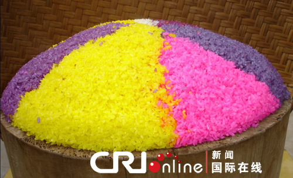
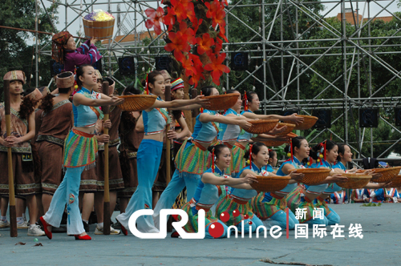
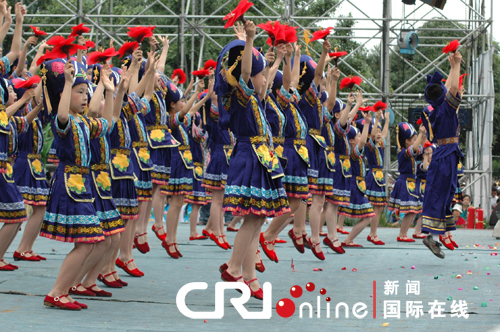
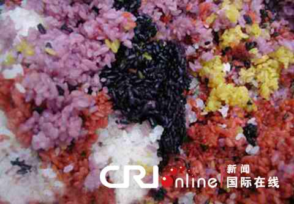
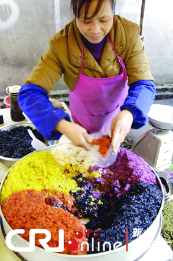

五色糯米饭又叫花米饭或青精米饭，是中国壮族人喜爱的食品之一。因糯米饭呈黑、红、黄、紫、白5种颜色而得名。壮族群众每到清明节或农历三月三等节日，家家户户都要做五色糯米饭。谁家的糯米饭颜色更鲜艳，味道更香甜，这家的女主人便是真正的壮家巧妇。今天的节目里，我们就给您讲将壮族五色糯米饭的故事。
每年农历的三月初三，天还没亮，各家妇女们便悄悄爬起来，把五色糯米放入蒸笼中文火蒸制，很快壮家村庄便四处弥漫浓香。天亮，孩子们出来啦，个个手中捏着团团糯饭，边吃边比，看谁家的糯米饭更黑、更黄、更红、更香。
看着、比着、尝着，壮乡三月三的清晨便热闹起来了。不久，小伙子、大姑娘也一个个走出来，他们身着艳丽的壮家服饰，手拿绣球，带着五色糯米饭，哼着山歌，手拉手到坡那边赶歌圩对歌去了。
壮族人为什么如此爱吃、爱做五色糯米饭？这其中啊，还有一些缘由呢。当地的一位研究民俗的学者葛祥就给我们讲起了本族的一个传说：“古时候，有个壮族青年叫特侬，父亲早已去世，和瘫痪在床的母亲相依为命。特侬非常孝顺，怕母亲一人在家烦闷，就背着母亲上山砍柴、下田插秧。每一次他都带着一大包母亲最爱吃的糯米饭放在她身边，让母亲饿了随时可以吃。”
特侬母子的这一举动被在山上的一只猴子看到了。那猴子便趁着特侬到山上砍柴时机，悄悄溜到母亲身边，敏捷地把糯米饭抢走了。母亲无法动弹，只能眼睁睁地看着猴子抢走糯米饭。一连几天如此，特侬看着一边饿极了的母亲，无奈地扯着身边的枫叶，却又想不出什么办法来。


猛然间，特侬发现自己掐枫叶的手黑漆漆的，原来是被黑色的枫叶汁染脏了。民俗学者葛祥说：“看着黑乎乎的五指，特侬灵机一动，立即把树上的枫叶割回家，放到石臼中舂成泥糊糊，用水浸泡一天一夜，得出黑色的液汁，再将糯米饭放到黑液汁中浸泡一晚。第二天早上将黑色的糯米捞起蒸煮，顿时一股清香弥漫全屋。”
母亲在屋里喊，特侬，什么东西这么香啊！特侬兴奋地说，这是黑色糯米饭，多香多甜啊！而这一天正是农历三月初三。
猴子看见了黑色糯米饭，以为是毒药，碰也不敢碰，便逃之夭夭了。这一天，特侬吃了黑色糯饭，口不干不燥，还觉得浑身是劲，打的柴更多了。从此，特侬和母亲上山砍柴，都带着黑色糯饭。
后来，壮家人都学特侬，家家户户做黑色糯米饭。再后来聪明的壮家人又学会了做黄色、红色、紫色糯米饭，加上糯米本身的白色，最后演变成了如今的五色糯米饭。来自安徽的游客孙涛饱餐之后形容，那味道在肚子里绕来绕去，几日不绝啊：“蒸熟后的糯米饭，几种颜色混在一起，非常好看。香气袭人。味道鲜美，而且还有微甜味，很好吃。”
五色糯米饭在气温不太高的情况下，可放多日而色香味不变。壮家儿女也是变着花样地创造出了多种吃法。壮族美食家覃宏说：“有的把糯米饭蒸好后，将花生、芝麻炒熟炒香放到臼中舂碎，再把花生芝麻碎末洒入五色饭中拌匀。还有的把五色糯米盛入新鲜竹筒，再把竹筒放在篝火上慢慢烘烤，随着竹筒劈里啪啦地裂开，差不多就可以吃了。”


制作五色糯米饭比较讲究方法。黑色糯米饭，用枫叶及其嫩茎之皮，放在臼中捣烂，稍为风干后浸入一定量的水中，浸泡一天一夜后，把叶渣捞出滤净，即取得黑染料液。黑染料汁要放入锅中用文火煮至五六十摄氏度，再把糯米浸入其中；黄染料，可用黄花或黄栀子、黄姜等植物的果实、块茎提取。将黄花煮沸，或将黄栀子捣碎放入水中浸泡，即得到黄橙色的染料液。也可用黄姜掏烂后与糯米拌均用力搓，可得黄色的糯米。
而红染料、紫染料其实是用同一品种、但叶子形状不同的红兰草经水煮而成。壮族村民黄晓女士介绍说：“叶片稍长点的红兰草，颜色稍深，煮出来的颜色较浓，泡出来的米就成了紫色；叶片较圆，颜色较浅，煮出来的颜色较淡，泡出来的米即成鲜红色。”
提取四种液汁出来后，分别把不等量的米放入其中浸泡一夜，等其上色后放入蒸笼中蒸约一个小时，便可蒸出黑、红、黄、紫、白五种颜色的糯米饭来。这样做出来的五色糯米饭色泽鲜艳、五彩斑斓、晶莹透亮，再加上它的滋润柔软、醇正平和，味道富有植物清香，吃起来令人回味无穷。当地的老百姓还告诉我们，五色糯米饭还有一定的药用价值。壮族美食家覃宏说：“红兰草有生血作用，栀子有清热凉血作用，用枫叶煮成的青粳饭，吃了之后能坚筋骨、益肠胃、补髓。”
壮家人喜爱五色饭，把它作为幸福吉祥的象征。除了农历三月初三外，社日、中元节，甚至过年等，也有人做五色糯米饭吃。在孩子满月、新居落成等喜庆日子里，也要蒸煮五色饭分送左邻右舍。民俗专家葛祥说：“壮人也爱枫叶，认为枫叶能“除邪驱鬼”，给人带来吉利和平安。所以，农历三月三做五色饭的时候，家家户户门口都插上一枝精心挑选的枫叶。甚至做五色饭的染料渣，也要撒在房屋外围的墙脚下，以求驱邪保平安。”
眼下正是五色糯米饭飘香的季节，如果您到广西的壮乡村寨，一定能够品尝到壮族人家精心制作的五色糯米饭。